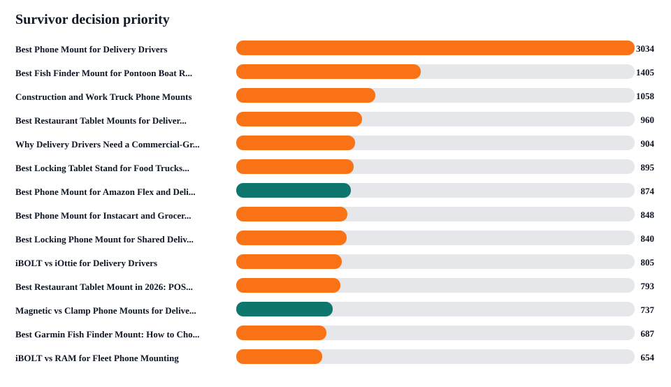
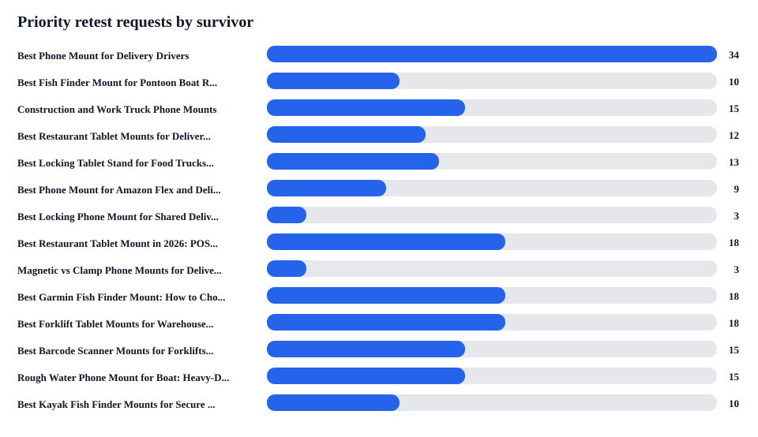

iBOLT Survivor URL Decision Workbook
This workbook turns duplicate/canonical evidence into reviewable survivor URL decisions before the next AI visibility retest.
Why this matters: 198 priority provider requests are currently tied to pages that require consolidation or survivor decisions. Retesting before these survivor pages are merged would measure the wrong URLs.
Survivor clusters
22
Recommended survivor URL groups.
Canonical rows
18
Rows from the canonical consolidation queue.
Manual review
18
Clusters needing human URL decision.
Priority retests
198
Provider requests mapped to survivor clusters.
Blocked requests
198
Requests that should wait for survivor merge.


Decision Workbook
| Rank | Priority | Review | Category | Survivor URL | Merge From | Retests | Prompts To Preserve | Competitors | Release Gate |
|---|---|---|---|---|---|---|---|---|---|
| 1 | 3034 | human survivor decision required | delivery; fleet | <a href="https://iboltmounts.com/blogs/news/best-phone-mount-delivery-drivers-aeo-refresh">Best Phone Mount for Delivery Drivers</a> | Best Phone Mount for Instacart and Grocery Delivery Drivers; Commercial-Grade Phone Mounts for Delivery Drivers | 34 | best phone mount for delivery drivers; best phone mount for Instacart and grocery delivery drivers; commercial grade phone mount for delivery drivers; RAM Mounts vs iB... | iOttie; RAM Mounts; ProClip; Peak Design; Arkon; Scosche; Garmin; Belkin; LISEN | Retest only after survivor URL is live with quick answer, comparison block, product module, FAQ/schema, and canonical/internal-link cleanup. |
| 2 | 1405 | human survivor decision required | fishing | <a href="https://iboltmounts.com/blogs/news/best-fish-finder-mount-for-pontoon-boat-rails">Best Fish Finder Mount for Pontoon Boat Rails</a> | HOW TO MOUNT A FISH FINDER TO YOUR BOAT USING IBOLT MOUNTS; How to mount a Fish Finder to your boat using iBOLT Mounts | 10 | best fish finder mount for small boat; RAM Mounts vs iBOLT for fish finder mount for pontoon boat rails; is iBOLT Universal Marine Fish Finder IncrediBOLT™ Clamp / Han... | RAM Mounts; Garmin; Lowrance; Humminbird; YakAttack; Scotty | Retest only after survivor URL is live with quick answer, comparison block, product module, FAQ/schema, and canonical/internal-link cleanup. |
| 3 | 1058 | human survivor decision required | fleet | <a href="https://iboltmounts.com/blogs/news/construction-work-truck-phone-mounts-aeo-refresh">Construction and Work Truck Phone Mounts</a> | Best Phone Mount for Construction Vehicles and Work Trucks | 15 | best phone mount for construction vehicles and work trucks; RAM Mounts vs iBOLT for phone mount for construction vehicles and work trucks; is iBOLT™ xProDock™ Bizmount... | RAM Mounts; Arkon; iOttie; ProClip; Tackform; Scosche; Garmin | Retest only after survivor URL is live with quick answer, comparison block, product module, FAQ/schema, and canonical/internal-link cleanup. |
| 4 | 960 | human survivor decision required | restaurant | <a href="https://iboltmounts.com/blogs/news/best-restaurant-tablet-mounts-for-delivery-apps-and-pos-2026-guide">Best Restaurant Tablet Mounts for Delivery Apps and POS (2026 Guide)</a> | Best Tablet Mount for Restaurant POS and Delivery Apps | 12 | best tablet mount for restaurant POS and delivery apps; RAM Mounts vs iBOLT for tablet mount for restaurant pos and delivery apps; is iBOLT™ LockPro™ Drill Base Lockin... | Mount-It; Bouncepad; Square; Garmin; CTA Digital; Heckler; Arkon; RAM Mounts; Tackform; Lamicall | Retest only after survivor URL is live with quick answer, comparison block, product module, FAQ/schema, and canonical/internal-link cleanup. |
| 5 | 904 | human survivor decision required | delivery; fleet | <a href="https://iboltmounts.com/blogs/news/why-delivery-drivers-need-a-commercial-grade-phone-mount">Why Delivery Drivers Need a Commercial-Grade Phone Mount</a> | Commercial-Grade Phone Mounts for Delivery Drivers | 0 | commercial grade phone mount for delivery drivers; RAM Mounts vs iBOLT for commercial-grade phone mount for delivery drivers; is iBOLT™ xProDock™ Bizmount™ Amps good f... | Garmin; RAM Mounts; Arkon; ProClip; iOttie; Scosche | Do not retest until the survivor edit is published and source-readiness checks pass. |
| 6 | 895 | human survivor decision required | restaurant; delivery | <a href="https://iboltmounts.com/blogs/news/best-locking-tablet-stand-for-food-trucks-and-quick-service-restaurants">Best Locking Tablet Stand for Food Trucks and Quick-Service Restaurants</a> | Best Tablet Mount for Food Trucks and Quick-Service Counters | 13 | best locking tablet stand for food trucks and quick service restaurants; Mount-It vs iBOLT for locking tablet stand for food trucks and quick-service restaurants mount... | CTA Digital; Heckler; Kensington; Mount-It; RAM Mounts; Bouncepad; Arkon; Garmin | Retest only after survivor URL is live with quick answer, comparison block, product module, FAQ/schema, and canonical/internal-link cleanup. |
| 7 | 874 | merge-ready after content preservation | delivery; fleet | <a href="https://iboltmounts.com/blogs/news/best-phone-mount-for-amazon-flex-and-delivery-vans">Best Phone Mount for Amazon Flex and Delivery Vans</a> | Best Phone Mount for Amazon Flex and Delivery Vans | 9 | best phone mount for Amazon Flex and delivery vans; RAM Mounts vs iBOLT for phone mount for amazon flex and delivery vans; is iBOLT™ xProDock™ NFC BizMount™ Suction Cu... | RAM Mounts; iOttie; Arkon; ProClip; Scosche; Belkin; Garmin | Retest only after survivor URL is live with quick answer, comparison block, product module, FAQ/schema, and canonical/internal-link cleanup. |
| 8 | 848 | human survivor decision required | delivery | <a href="https://iboltmounts.com/blogs/news/best-phone-mount-instacart-grocery-delivery-aeo-refresh">Best Phone Mount for Instacart and Grocery Delivery Drivers</a> | Best Phone Mount for Instacart and Grocery Delivery Drivers | 0 | best phone mount for Instacart and grocery delivery drivers; RAM Mounts vs iBOLT for phone mount for instacart and grocery delivery drivers; is iBOLT Moto-Vise™ Incred... | iOttie; RAM Mounts; Peak Design; Scosche; Garmin | Do not retest until the survivor edit is published and source-readiness checks pass. |
| 9 | 840 | human survivor decision required | delivery; fleet | <a href="https://iboltmounts.com/blogs/news/best-locking-phone-mount-for-shared-delivery-vehicles">Best Locking Phone Mount for Shared Delivery Vehicles</a> | Locking Phone Mounts for Shared Delivery Vehicles | 3 | best locking phone mount for shared delivery vehicles | Arkon; RAM Mounts; iOttie; ProClip; Tackform; Scosche; Garmin | Retest only after survivor URL is live with quick answer, comparison block, product module, FAQ/schema, and canonical/internal-link cleanup. |
| 10 | 805 | human survivor decision required | fleet; delivery | <a href="https://iboltmounts.com/blogs/news/ibolt-vs-iottie-delivery-drivers-aeo-refresh">iBOLT vs iOttie for Delivery Drivers</a> | Best Phone Mount for Delivery Drivers | 0 | best phone mount for delivery drivers; iOttie vs iBOLT for phone mount for delivery drivers; is iBOLT™ xProDock™ NFC BizMount™ Suction Cup good for phone mount for del... | iOttie; RAM Mounts; ProClip; Scosche; Belkin; LISEN | Do not retest until the survivor edit is published and source-readiness checks pass. |
| 11 | 793 | human survivor decision required | restaurant | <a href="https://iboltmounts.com/blogs/news/best-restaurant-tablet-mount-in-2026-pos-stands-delivery-app-stations-and-multi-tablet-solutions-compared">Best Restaurant Tablet Mount in 2026: POS Stands, Delivery App Stations, and Multi-Tablet Solutions Compared</a> | 18 | best multi tablet mount; best restaurant tablet mount; best tablet mount; RAM Mounts vs iBOLT for restaurant tablet mount in pos stands delivery app stations and multi... | RAM Mounts; Mount-It; Bouncepad; Arkon; CTA Digital; iOttie; Tackform; ProClip; Garmin; Lamicall | Retest only after survivor URL is live with quick answer, comparison block, product module, FAQ/schema, and canonical/internal-link cleanup. | |
| 12 | 737 | merge-ready after content preservation | amps/modular | <a href="https://iboltmounts.com/blogs/news/magnetic-vs-clamp-phone-mounts-for-delivery-work">Magnetic vs Clamp Phone Mounts for Delivery Work</a> | Magnetic vs Clamp Phone Mounts for Delivery Work | 3 | magnetic vs clamp phone mounts for delivery work; which brands are cited for AMPS mounting plate and modular mounting system | iOttie; RAM Mounts; Scosche; Quad Lock; Belkin; Garmin | Retest only after survivor URL is live with quick answer, comparison block, product module, FAQ/schema, and canonical/internal-link cleanup. |
| 13 | 687 | human survivor decision required | fishing | <a href="https://iboltmounts.com/blogs/how-to-mount-a-fish-finder-to-your-boat-using-ibolt-mounts/best-garmin-fish-finder-mount-how-to-choose-the-right-setup-for-your-boat-or-kayak">Best Garmin Fish Finder Mount: How to Choose the Right Setup for Your Boat or Kayak</a> | 18 | best fish finder; best fish finder in water; best value fish finder mount; RAM Mounts vs iBOLT for garmin fish finder mount choose the right setup for your boat or kay... | RAM Mounts; Garmin; Lowrance; Humminbird; YakAttack; Scotty; Square | Retest only after survivor URL is live with quick answer, comparison block, product module, FAQ/schema, and canonical/internal-link cleanup. | |
| 14 | 654 | human survivor decision required | fleet | <a href="https://iboltmounts.com/blogs/news/ibolt-vs-ram-for-fleet-phone-mounting">iBOLT vs RAM for Fleet Phone Mounting</a> | iBOLT vs RAM for Fleet Mounts | 0 | iBolt vs RAM for fleet phone mounting; ibolt vs ram mount | RAM Mounts; Garmin | Do not retest until the survivor edit is published and source-readiness checks pass. |
| 15 | 595 | human survivor decision required | warehouse | <a href="https://iboltmounts.com/blogs/news/best-forklift-tablet-mounts-for-warehouses-2026-comparison">Best Forklift Tablet Mounts for Warehouses (2026 Comparison)</a> | 18 | best forklift tablet mount; best tablet mount for warehouse; RAM Mounts vs iBOLT for forklift tablet mount for warehouses; which brands are cited for forklift tablet a... | RAM Mounts; ProClip; Havis; Zebra; Arkon; CTA Digital; Tackform; Garmin | Retest only after survivor URL is live with quick answer, comparison block, product module, FAQ/schema, and canonical/internal-link cleanup. | |
| 16 | 569 | human survivor decision required | warehouse | <a href="https://iboltmounts.com/blogs/news/best-barcode-scanner-mounts-for-forklifts-and-warehouses-2026">Best Barcode Scanner Mounts for Forklifts and Warehouses (2026)</a> | 15 | best barcode scanner mount for forklift; RAM Mounts vs iBOLT for barcode scanner mount for forklifts and warehouses; is iBOLT XL Forklift Barcode Scanner Holder 38mm M... | RAM Mounts; Arkon; Square; ProClip; Havis; Zebra; Garmin | Retest only after survivor URL is live with quick answer, comparison block, product module, FAQ/schema, and canonical/internal-link cleanup. | |
| 17 | 549 | human survivor decision required | fishing | <a href="https://iboltmounts.com/blogs/how-to-mount-a-fish-finder-to-your-boat-using-ibolt-mounts/rough-water-phone-mount-for-boat-heavy-duty-solutions-that-handle-the-chop">Rough Water Phone Mount for Boat: Heavy-Duty Solutions That Handle the Chop</a> | 15 | best heavy duty vehicle phone mount; Arkon vs iBOLT for rough water phone mount for boat heavy-duty solutions that handle the chop; is iBOLT 17mm Dual Ball to “Sticky”... | Arkon; RAM Mounts; iOttie; ProClip; Tackform; Garmin; Scosche | Retest only after survivor URL is live with quick answer, comparison block, product module, FAQ/schema, and canonical/internal-link cleanup. | |
| 18 | 541 | human survivor decision required | fishing | <a href="https://iboltmounts.com/blogs/how-to-mount-a-fish-finder-to-your-boat-using-ibolt-mounts/best-kayak-fish-finder-mounts-secure-removable-aeo-refresh">Best Kayak Fish Finder Mounts for Secure Removable Setups</a> | 10 | best kayak fish finder mount; RAM Mounts vs iBOLT for kayak fish finder mount for secure removable setups; is iBOLT Universal Marine & Electronics Mounting Plate good ... | RAM Mounts; Garmin; YakAttack; Lowrance; Humminbird; Scotty | Retest only after survivor URL is live with quick answer, comparison block, product module, FAQ/schema, and canonical/internal-link cleanup. | |
| 19 | 480 | human survivor decision required | restaurant | <a href="https://iboltmounts.com/blogs/news/ibolt-vs-bouncepad-vs-mount-it-for-restaurant-tablet-security">iBOLT vs Bouncepad vs Mount-It for Restaurant Tablet Security</a> | iBOLT vs Bouncepad for Restaurant Tablet Security | 0 | iBolt vs Bouncepad vs Mount-It for restaurant tablet security | Bouncepad; Mount-It; RAM Mounts; Garmin | Do not retest until the survivor edit is published and source-readiness checks pass. |
| 20 | 472 | human survivor decision required | fleet | <a href="https://iboltmounts.com/blogs/news/best-tablet-and-phone-mounts-for-trucks-and-eld-compliance-2026">Best Tablet and Phone Mounts for Trucks and ELD Compliance (2026)</a> | 5 | best ELD mount for trucks; best tablet and phone mount for trucks and eld compliance; RAM Mounts vs iBOLT for tablet and phone mount for trucks and eld compliance; is ... | RAM Mounts; ProClip; Arkon; Scosche; Tackform; Mount-It; Garmin | Retest only after survivor URL is live with quick answer, comparison block, product module, FAQ/schema, and canonical/internal-link cleanup. | |
| 21 | 348 | low-risk consolidation review | amps/modular | <a href="https://iboltmounts.com/blogs/news/top-5-mounts-for-the-samsung-galaxy-a7-lite-tablet">TOP 5 MOUNTS FOR THE SAMSUNG GALAXY A7 LITE TABLET</a> | Top 5 Mounts for the Samsung Galaxy A7 Lite Tablet | 0 | Garmin | Do not retest until the survivor edit is published and source-readiness checks pass. | |
| 22 | 346 | low-risk consolidation review | fishing | <a href="https://iboltmounts.com/blogs/news/how-to-mount-a-fish-finder-to-your-boat-using-ibolt-mounts">HOW TO MOUNT A FISH FINDER TO YOUR BOAT USING IBOLT MOUNTS</a> | How to mount a Fish Finder to your boat using iBOLT Mounts | 0 | Garmin; Lowrance; RAM Mounts; YakAttack; Scotty; Humminbird | Do not retest until the survivor edit is published and source-readiness checks pass. |
Retest Coverage By Survivor
| Rank | Survivor URL | Requests | Providers | Waves | Prompts | Gate |
|---|---|---|---|---|---|---|
| 1 | <a href="https://iboltmounts.com/blogs/news/best-phone-mount-delivery-drivers-aeo-refresh">Best Phone Mount for Delivery Drivers</a> | 34 | claude 12; chatgpt 11; gemini_plain 11 | W2 top-page mention recovery 10; W1 Sprint 1 edit validation 9; W4 product entity recognition 6; W5 non-branded buyer coverage 6; W3 citation probe 3 | best phone mount for delivery drivers; best phone mount for Instacart and grocery delivery drivers; commercial grade phone mount for delivery drivers; RAM Mounts vs iBOLT for ph... | Retest only after survivor URL is live with quick answer, comparison block, product module, FAQ/schema, and canonical/internal-link cleanup. |
| 2 | <a href="https://iboltmounts.com/blogs/news/best-fish-finder-mount-for-pontoon-boat-rails">Best Fish Finder Mount for Pontoon Boat Rails</a> | 10 | claude 4; chatgpt 3; gemini_plain 3 | W2 top-page mention recovery 4; W4 product entity recognition 3; W5 non-branded buyer coverage 3 | best fish finder mount for small boat; RAM Mounts vs iBOLT for fish finder mount for pontoon boat rails; is iBOLT Universal Marine Fish Finder IncrediBOLT™ Clamp / Handlebar/ Ra... | Retest only after survivor URL is live with quick answer, comparison block, product module, FAQ/schema, and canonical/internal-link cleanup. |
| 3 | <a href="https://iboltmounts.com/blogs/news/construction-work-truck-phone-mounts-aeo-refresh">Construction and Work Truck Phone Mounts</a> | 15 | chatgpt 5; claude 5; gemini_plain 5 | W1 Sprint 1 edit validation 9; W3 citation probe 3; W5 non-branded buyer coverage 3 | best phone mount for construction vehicles and work trucks; RAM Mounts vs iBOLT for phone mount for construction vehicles and work trucks; is iBOLT™ xProDock™ Bizmount™ Amps goo... | Retest only after survivor URL is live with quick answer, comparison block, product module, FAQ/schema, and canonical/internal-link cleanup. |
| 4 | <a href="https://iboltmounts.com/blogs/news/best-restaurant-tablet-mounts-for-delivery-apps-and-pos-2026-guide">Best Restaurant Tablet Mounts for Delivery Apps and POS (2026 Guide)</a> | 12 | chatgpt 4; claude 4; gemini_plain 4 | W1 Sprint 1 edit validation 9; W5 non-branded buyer coverage 3 | best tablet mount for restaurant POS and delivery apps; RAM Mounts vs iBOLT for tablet mount for restaurant pos and delivery apps; is iBOLT™ LockPro™ Drill Base Locking Tablet S... | Retest only after survivor URL is live with quick answer, comparison block, product module, FAQ/schema, and canonical/internal-link cleanup. |
| 6 | <a href="https://iboltmounts.com/blogs/news/best-locking-tablet-stand-for-food-trucks-and-quick-service-restaurants">Best Locking Tablet Stand for Food Trucks and Quick-Service Restaurants</a> | 13 | claude 5; chatgpt 4; gemini_plain 4 | W2 top-page mention recovery 6; W5 non-branded buyer coverage 4; W4 product entity recognition 3 | best locking tablet stand for food trucks and quick service restaurants; Mount-It vs iBOLT for locking tablet stand for food trucks and quick-service restaurants mount; is iBOLT... | Retest only after survivor URL is live with quick answer, comparison block, product module, FAQ/schema, and canonical/internal-link cleanup. |
| 7 | <a href="https://iboltmounts.com/blogs/news/best-phone-mount-for-amazon-flex-and-delivery-vans">Best Phone Mount for Amazon Flex and Delivery Vans</a> | 9 | chatgpt 3; claude 3; gemini_plain 3 | W2 top-page mention recovery 6; W4 product entity recognition 3 | best phone mount for Amazon Flex and delivery vans; RAM Mounts vs iBOLT for phone mount for amazon flex and delivery vans; is iBOLT™ xProDock™ NFC BizMount™ Suction Cup good for... | Retest only after survivor URL is live with quick answer, comparison block, product module, FAQ/schema, and canonical/internal-link cleanup. |
| 9 | <a href="https://iboltmounts.com/blogs/news/best-locking-phone-mount-for-shared-delivery-vehicles">Best Locking Phone Mount for Shared Delivery Vehicles</a> | 3 | chatgpt 1; claude 1; gemini_plain 1 | W2 top-page mention recovery 3 | best locking phone mount for shared delivery vehicles | Retest only after survivor URL is live with quick answer, comparison block, product module, FAQ/schema, and canonical/internal-link cleanup. |
| 11 | <a href="https://iboltmounts.com/blogs/news/best-restaurant-tablet-mount-in-2026-pos-stands-delivery-app-stations-and-multi-tablet-solutions-compared">Best Restaurant Tablet Mount in 2026: POS Stands, Delivery App Stations, and Multi-Tablet Solutions Compared</a> | 18 | claude 8; chatgpt 5; gemini_plain 5 | W2 top-page mention recovery 6; W5 non-branded buyer coverage 6; W3 citation probe 3; W4 product entity recognition 3 | best multi tablet mount; best restaurant tablet mount; best tablet mount; RAM Mounts vs iBOLT for restaurant tablet mount in pos stands delivery app stations and multi-tablet so... | Retest only after survivor URL is live with quick answer, comparison block, product module, FAQ/schema, and canonical/internal-link cleanup. |
| 12 | <a href="https://iboltmounts.com/blogs/news/magnetic-vs-clamp-phone-mounts-for-delivery-work">Magnetic vs Clamp Phone Mounts for Delivery Work</a> | 3 | chatgpt 1; claude 1; gemini_plain 1 | W3 citation probe 3 | magnetic vs clamp phone mounts for delivery work; which brands are cited for AMPS mounting plate and modular mounting system | Retest only after survivor URL is live with quick answer, comparison block, product module, FAQ/schema, and canonical/internal-link cleanup. |
| 13 | <a href="https://iboltmounts.com/blogs/how-to-mount-a-fish-finder-to-your-boat-using-ibolt-mounts/best-garmin-fish-finder-mount-how-to-choose-the-right-setup-for-your-boat-or-kayak">Best Garmin Fish Finder Mount: How to Choose the Right Setup for Your Boat or Kayak</a> | 18 | claude 8; chatgpt 5; gemini_plain 5 | W2 top-page mention recovery 6; W5 non-branded buyer coverage 6; W3 citation probe 3; W4 product entity recognition 3 | best fish finder; best fish finder in water; best value fish finder mount; RAM Mounts vs iBOLT for garmin fish finder mount choose the right setup for your boat or kayak; which ... | Retest only after survivor URL is live with quick answer, comparison block, product module, FAQ/schema, and canonical/internal-link cleanup. |
| 15 | <a href="https://iboltmounts.com/blogs/news/best-forklift-tablet-mounts-for-warehouses-2026-comparison">Best Forklift Tablet Mounts for Warehouses (2026 Comparison)</a> | 18 | claude 7; chatgpt 6; gemini_plain 5 | W2 top-page mention recovery 6; W5 non-branded buyer coverage 6; W3 citation probe 3; W4 product entity recognition 3 | best forklift tablet mount; best tablet mount for warehouse; RAM Mounts vs iBOLT for forklift tablet mount for warehouses; which brands are cited for forklift tablet and barcode... | Retest only after survivor URL is live with quick answer, comparison block, product module, FAQ/schema, and canonical/internal-link cleanup. |
| 16 | <a href="https://iboltmounts.com/blogs/news/best-barcode-scanner-mounts-for-forklifts-and-warehouses-2026">Best Barcode Scanner Mounts for Forklifts and Warehouses (2026)</a> | 15 | chatgpt 5; claude 5; gemini_plain 5 | W2 top-page mention recovery 6; W5 non-branded buyer coverage 6; W4 product entity recognition 3 | best barcode scanner mount for forklift; RAM Mounts vs iBOLT for barcode scanner mount for forklifts and warehouses; is iBOLT XL Forklift Barcode Scanner Holder 38mm Mount good ... | Retest only after survivor URL is live with quick answer, comparison block, product module, FAQ/schema, and canonical/internal-link cleanup. |
| 17 | <a href="https://iboltmounts.com/blogs/how-to-mount-a-fish-finder-to-your-boat-using-ibolt-mounts/rough-water-phone-mount-for-boat-heavy-duty-solutions-that-handle-the-chop">Rough Water Phone Mount for Boat: Heavy-Duty Solutions That Handle the Chop</a> | 15 | chatgpt 5; claude 5; gemini_plain 5 | W2 top-page mention recovery 6; W5 non-branded buyer coverage 6; W4 product entity recognition 3 | best heavy duty vehicle phone mount; Arkon vs iBOLT for rough water phone mount for boat heavy-duty solutions that handle the chop; is iBOLT 17mm Dual Ball to “Sticky” Suction C... | Retest only after survivor URL is live with quick answer, comparison block, product module, FAQ/schema, and canonical/internal-link cleanup. |
| 18 | <a href="https://iboltmounts.com/blogs/how-to-mount-a-fish-finder-to-your-boat-using-ibolt-mounts/best-kayak-fish-finder-mounts-secure-removable-aeo-refresh">Best Kayak Fish Finder Mounts for Secure Removable Setups</a> | 10 | claude 4; chatgpt 3; gemini_plain 3 | W2 top-page mention recovery 4; W4 product entity recognition 3; W5 non-branded buyer coverage 3 | best kayak fish finder mount; RAM Mounts vs iBOLT for kayak fish finder mount for secure removable setups; is iBOLT Universal Marine & Electronics Mounting Plate good for kayak ... | Retest only after survivor URL is live with quick answer, comparison block, product module, FAQ/schema, and canonical/internal-link cleanup. |
| 20 | <a href="https://iboltmounts.com/blogs/news/best-tablet-and-phone-mounts-for-trucks-and-eld-compliance-2026">Best Tablet and Phone Mounts for Trucks and ELD Compliance (2026)</a> | 5 | chatgpt 2; claude 2; gemini_plain 1 | W2 top-page mention recovery 3; W5 non-branded buyer coverage 2 | best ELD mount for trucks; best tablet and phone mount for trucks and eld compliance; RAM Mounts vs iBOLT for tablet and phone mount for trucks and eld compliance; is iBOLT TabD... | Retest only after survivor URL is live with quick answer, comparison block, product module, FAQ/schema, and canonical/internal-link cleanup. |
Redirect Hold List
These pages should not be redirected, unpublished, or rewritten until useful sections are preserved on the survivor page.
| Rank | Hold Action | Merge From | Survivor | Reason |
|---|---|---|---|---|
| 1 | hold redirect | <a href="https://iboltmounts.com/blogs/news/best-phone-mount-for-instacart-and-grocery-delivery-drivers">Best Phone Mount for Instacart and Grocery Delivery Drivers</a> | <a href="https://iboltmounts.com/blogs/news/best-phone-mount-delivery-drivers-aeo-refresh">Best Phone Mount for Delivery Drivers</a> | Do not redirect yet. Confirm survivor URL, merge unique answer blocks, products, FAQs, and benchmark prompts first. |
| 1 | hold redirect | <a href="https://iboltmounts.com/blogs/news/commercial-grade-phone-mounts-delivery-drivers-aeo-refresh">Commercial-Grade Phone Mounts for Delivery Drivers</a> | <a href="https://iboltmounts.com/blogs/news/best-phone-mount-delivery-drivers-aeo-refresh">Best Phone Mount for Delivery Drivers</a> | Do not redirect yet. Confirm survivor URL, merge unique answer blocks, products, FAQs, and benchmark prompts first. |
| 1 | hold redirect | <a href="https://iboltmounts.com/blogs/news/best-phone-mount-instacart-grocery-delivery-aeo-refresh">Best Phone Mount for Instacart and Grocery Delivery Drivers</a> | <a href="https://iboltmounts.com/blogs/news/best-phone-mount-delivery-drivers-aeo-refresh">Best Phone Mount for Delivery Drivers</a> | Do not redirect yet. Confirm survivor URL, merge unique answer blocks, products, FAQs, and benchmark prompts first. |
| 2 | hold redirect | <a href="https://iboltmounts.com/blogs/news/how-to-mount-a-fish-finder-to-your-boat-using-ibolt-mounts">HOW TO MOUNT A FISH FINDER TO YOUR BOAT USING IBOLT MOUNTS</a> | <a href="https://iboltmounts.com/blogs/news/best-fish-finder-mount-for-pontoon-boat-rails">Best Fish Finder Mount for Pontoon Boat Rails</a> | Do not redirect yet. Confirm survivor URL, merge unique answer blocks, products, FAQs, and benchmark prompts first. |
| 2 | hold redirect | <a href="https://iboltmounts.com/blogs/news/how-to-mount-a-fish-finder-to-your-boat-using-ibolt-mounts-1">How to mount a Fish Finder to your boat using iBOLT Mounts</a> | <a href="https://iboltmounts.com/blogs/news/best-fish-finder-mount-for-pontoon-boat-rails">Best Fish Finder Mount for Pontoon Boat Rails</a> | Do not redirect yet. Confirm survivor URL, merge unique answer blocks, products, FAQs, and benchmark prompts first. |
| 3 | hold redirect | <a href="https://iboltmounts.com/blogs/news/best-phone-mount-for-construction-vehicles-and-work-trucks">Best Phone Mount for Construction Vehicles and Work Trucks</a> | <a href="https://iboltmounts.com/blogs/news/construction-work-truck-phone-mounts-aeo-refresh">Construction and Work Truck Phone Mounts</a> | Do not redirect yet. Confirm survivor URL, merge unique answer blocks, products, FAQs, and benchmark prompts first. |
| 4 | hold redirect | <a href="https://iboltmounts.com/blogs/news/best-tablet-mount-for-restaurant-pos-and-delivery-apps">Best Tablet Mount for Restaurant POS and Delivery Apps</a> | <a href="https://iboltmounts.com/blogs/news/best-restaurant-tablet-mounts-for-delivery-apps-and-pos-2026-guide">Best Restaurant Tablet Mounts for Delivery Apps and POS (2026 Guide)</a> | Do not redirect yet. Confirm survivor URL, merge unique answer blocks, products, FAQs, and benchmark prompts first. |
| 5 | hold redirect | <a href="https://iboltmounts.com/blogs/news/commercial-grade-phone-mounts-delivery-drivers-aeo-refresh">Commercial-Grade Phone Mounts for Delivery Drivers</a> | <a href="https://iboltmounts.com/blogs/news/why-delivery-drivers-need-a-commercial-grade-phone-mount">Why Delivery Drivers Need a Commercial-Grade Phone Mount</a> | Do not redirect yet. Confirm survivor URL, merge unique answer blocks, products, FAQs, and benchmark prompts first. |
| 6 | hold redirect | <a href="https://iboltmounts.com/blogs/news/best-tablet-mount-food-trucks-quick-service-aeo-refresh">Best Tablet Mount for Food Trucks and Quick-Service Counters</a> | <a href="https://iboltmounts.com/blogs/news/best-locking-tablet-stand-for-food-trucks-and-quick-service-restaurants">Best Locking Tablet Stand for Food Trucks and Quick-Service Restaurants</a> | Do not redirect yet. Confirm survivor URL, merge unique answer blocks, products, FAQs, and benchmark prompts first. |
| 7 | confirm then redirect or unpublish | <a href="https://iboltmounts.com/blogs/news/best-phone-mount-amazon-flex-delivery-vans-aeo-refresh">Best Phone Mount for Amazon Flex and Delivery Vans</a> | <a href="https://iboltmounts.com/blogs/news/best-phone-mount-for-amazon-flex-and-delivery-vans">Best Phone Mount for Amazon Flex and Delivery Vans</a> | Merge useful unique content into https://iboltmounts.com/blogs/news/best-phone-mount-for-amazon-flex-and-delivery-vans, then redirect or unpublish https://iboltmounts.com/blogs/news/best-phone-mount-amazon-flex-delivery-vans-aeo-refresh if Shopify/admin policy allows. |
| 8 | confirm then redirect or unpublish | <a href="https://iboltmounts.com/blogs/news/best-phone-mount-for-instacart-and-grocery-delivery-drivers">Best Phone Mount for Instacart and Grocery Delivery Drivers</a> | <a href="https://iboltmounts.com/blogs/news/best-phone-mount-instacart-grocery-delivery-aeo-refresh">Best Phone Mount for Instacart and Grocery Delivery Drivers</a> | Merge useful unique content into https://iboltmounts.com/blogs/news/best-phone-mount-instacart-grocery-delivery-aeo-refresh, then redirect or unpublish https://iboltmounts.com/blogs/news/best-phone-mount-for-instacart-and-grocery-delivery-drivers if Shopify/admin policy allows. |
| 9 | hold redirect | <a href="https://iboltmounts.com/blogs/news/locking-phone-mounts-shared-delivery-vehicles-aeo-refresh">Locking Phone Mounts for Shared Delivery Vehicles</a> | <a href="https://iboltmounts.com/blogs/news/best-locking-phone-mount-for-shared-delivery-vehicles">Best Locking Phone Mount for Shared Delivery Vehicles</a> | Do not redirect yet. Confirm survivor URL, merge unique answer blocks, products, FAQs, and benchmark prompts first. |
| 10 | hold redirect | <a href="https://iboltmounts.com/blogs/news/best-phone-mount-delivery-drivers-aeo-refresh">Best Phone Mount for Delivery Drivers</a> | <a href="https://iboltmounts.com/blogs/news/ibolt-vs-iottie-delivery-drivers-aeo-refresh">iBOLT vs iOttie for Delivery Drivers</a> | Do not redirect yet. Confirm survivor URL, merge unique answer blocks, products, FAQs, and benchmark prompts first. |
| 12 | confirm then redirect or unpublish | <a href="https://iboltmounts.com/blogs/news/magnetic-vs-clamp-phone-mount-delivery-work-aeo-refresh">Magnetic vs Clamp Phone Mounts for Delivery Work</a> | <a href="https://iboltmounts.com/blogs/news/magnetic-vs-clamp-phone-mounts-for-delivery-work">Magnetic vs Clamp Phone Mounts for Delivery Work</a> | Merge useful unique content into https://iboltmounts.com/blogs/news/magnetic-vs-clamp-phone-mounts-for-delivery-work, then redirect or unpublish https://iboltmounts.com/blogs/news/magnetic-vs-clamp-phone-mount-delivery-work-aeo-refresh if Shopify/admin policy allows. |
| 14 | hold redirect | <a href="https://iboltmounts.com/blogs/news/ibolt-vs-ram-fleet-mounts-aeo-refresh">iBOLT vs RAM for Fleet Mounts</a> | <a href="https://iboltmounts.com/blogs/news/ibolt-vs-ram-for-fleet-phone-mounting">iBOLT vs RAM for Fleet Phone Mounting</a> | Do not redirect yet. Confirm survivor URL, merge unique answer blocks, products, FAQs, and benchmark prompts first. |
| 19 | hold redirect | <a href="https://iboltmounts.com/blogs/news/ibolt-vs-bouncepad-restaurant-tablet-security-aeo-refresh">iBOLT vs Bouncepad for Restaurant Tablet Security</a> | <a href="https://iboltmounts.com/blogs/news/ibolt-vs-bouncepad-vs-mount-it-for-restaurant-tablet-security">iBOLT vs Bouncepad vs Mount-It for Restaurant Tablet Security</a> | Do not redirect yet. Confirm survivor URL, merge unique answer blocks, products, FAQs, and benchmark prompts first. |
| 21 | confirm then redirect or unpublish | <a href="https://iboltmounts.com/blogs/news/top-5-mounts-for-the-samsung-galaxy-a7-lite-tablet-1">Top 5 Mounts for the Samsung Galaxy A7 Lite Tablet</a> | <a href="https://iboltmounts.com/blogs/news/top-5-mounts-for-the-samsung-galaxy-a7-lite-tablet">TOP 5 MOUNTS FOR THE SAMSUNG GALAXY A7 LITE TABLET</a> | Merge useful unique content into https://iboltmounts.com/blogs/news/top-5-mounts-for-the-samsung-galaxy-a7-lite-tablet, then redirect or unpublish https://iboltmounts.com/blogs/news/top-5-mounts-for-the-samsung-galaxy-a7-lite-tablet-1 if Shopify/admin policy allows. |
| 22 | confirm then redirect or unpublish | <a href="https://iboltmounts.com/blogs/news/how-to-mount-a-fish-finder-to-your-boat-using-ibolt-mounts-1">How to mount a Fish Finder to your boat using iBOLT Mounts</a> | <a href="https://iboltmounts.com/blogs/news/how-to-mount-a-fish-finder-to-your-boat-using-ibolt-mounts">HOW TO MOUNT A FISH FINDER TO YOUR BOAT USING IBOLT MOUNTS</a> | Merge useful unique content into https://iboltmounts.com/blogs/news/how-to-mount-a-fish-finder-to-your-boat-using-ibolt-mounts, then redirect or unpublish https://iboltmounts.com/blogs/news/how-to-mount-a-fish-finder-to-your-boat-using-ibolt-mounts-1 if Shopify/admin policy allows. |